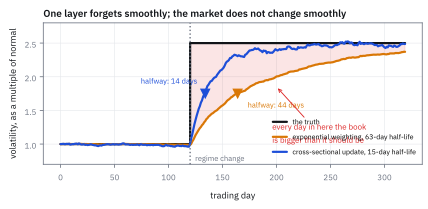
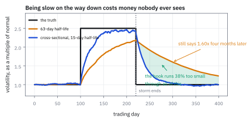
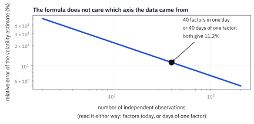
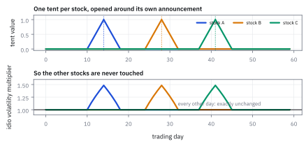

27.3 Short-Term Volatility Updating
วันเดียวให้ตัวเลขมา 40 ตัว ไม่ใช่ตัวเดียว ใช้มันสิ
ตลาดเข้าสู่ภาวะปั่นป่วนวันนี้ ความผันผวนจริงกระโดดเป็น 2.5 เท่า แบบจำลองที่ใช้ half-life 63 วันจะใช้เวลากี่วันกว่าจะตามทันครึ่งทาง?
เฉลย: 44 วัน และกว่าจะถึง 90% ของทางต้องรอ 190 วัน ซึ่งคือเกือบทั้งปี แต่มีข้อมูลที่แบบจำลองนั้นทิ้งไปเปล่า ๆ ทุกวัน คือความจริงที่ว่าวันเดียวให้ตัวเลขมา 40 ตัว ตัวหนึ่งต่อ factor หนึ่งตัว ไม่ใช่ตัวเดียว ถ้าใช้มัน จะตามทันครึ่งทางใน 14 วันและ 90% ใน 53 วัน เร็วขึ้นสามเท่ากว่า และตอนพายุสงบก็ปล่อยกลับได้เร็วกว่ามากด้วย
ศัพท์ที่ใช้ในหัวข้อนี้
- short-term volatility updating (STVU)
- กลไกที่ปรับความผันผวนของแบบจำลองด้วยข้อมูลของวันนี้ทั้งภาพตัดขวาง ใช้เติมบนแบบจำลองที่ตอบสนองช้า
- regime change
- การที่ตลาดเปลี่ยนภาวะแบบกระโดด ไม่ใช่ค่อย ๆ เปลี่ยน ใช้เป็นสิ่งที่ exponential weighting ตามไม่ทันโดยธรรมชาติ
- cross-section
- ข้อมูลของทุกตัวในวันเดียวกัน ใช้แยกจาก time series ซึ่งคือข้อมูลของตัวเดียวข้ามหลายวัน
- latent state
- ตัวแปรที่มองไม่เห็นแต่ขับสิ่งที่เห็น ในที่นี้คือระดับความปั่นป่วนของวันนั้น
- standardized factor return
- factor return ที่หารด้วยความผันผวนและถอด correlation ออกแล้ว ควรมีขนาดราวหนึ่งถ้าแบบจำลองถูก
- whitening
- การแปลงให้ตัวแปรไม่สัมพันธ์กันและมี variance เป็นหนึ่ง ใช้เป็นขั้นแรกของกลไกนี้
- multiplier
- ตัวคูณที่ปรับ covariance matrix ทั้งก้อนขึ้นหรือลง ใช้เป็นผลลัพธ์ของกลไกนี้
- half-life
- จำนวนวันที่น้ำหนักของข้อมูลเก่าหดเหลือครึ่ง ใช้ควบคุมความเร็วของทั้งสองชั้น
- tent function
- ตัวคูณรูปสามเหลี่ยมที่สูงสุดตรงกลางแล้วลดลงสองข้างจนเป็นศูนย์ ใช้จำกัดการปรับให้เกิดเฉพาะรอบวันประกาศผลประกอบการ
- earnings announcement
- วันที่บริษัทประกาศผลประกอบการ ใช้เป็นวันที่ความผันผวนของหุ้นตัวนั้นพุ่งอย่างคาดเดาได้
- de-risking
- การลดขนาดพอร์ตเมื่อความเสี่ยงสูงขึ้น ใช้เป็นการกระทำที่ตัวเลขจากหัวข้อนี้ไปสั่ง
- chi distribution
- distribution ของความยาวของ vector ที่แต่ละตัวเป็น Normal มาตรฐาน ใช้เป็นเกณฑ์ว่าขนาดปกติควรเป็นเท่าไร
สัญลักษณ์ที่ใช้ในหัวข้อนี้
| สัญลักษณ์ | ความหมาย | หน่วย |
|---|---|---|
| $\mathbf f_t$ | factor return ในวัน t | decimal |
| $\mathbf V_t,\ \mathbf C_t$ | ความผันผวนและ correlation จากหัวข้อ 27.2 | decimal และ unitless |
| $\mathbf u_t$ | factor return ที่ทำให้เป็นมาตรฐานแล้ว | unitless |
| $x_t$ | สถานะที่มองไม่เห็น คือระดับความปั่นป่วนของวันนั้น | unitless |
| $e^{\hat x_t}$ | ตัวคูณที่ปรับ covariance matrix ทั้งก้อน | unitless |
| $\tau_0$ | half-life ของกลไกนี้ | วันทำการ |
| $m$ | จำนวน factor | จำนวน |
| $a_{i,t}$ | ค่าของสามเหลี่ยมรอบวันประกาศผลของหุ้น i | unitless |
| $\tau_{\text{earn}}$ | ครึ่งความกว้างของหน้าต่างรอบวันประกาศผล | วันทำการ |
ที่มาที่ไป: ปัญหาที่ exponential weighting แก้ไม่ได้ด้วยตัวเอง
หัวข้อ 27.2 จบด้วย covariance matrix ที่ประมาณด้วยน้ำหนักลดหลั่น ซึ่งดีทุกอย่างยกเว้นเรื่องเดียว มันลืมอย่างราบรื่น แต่ตลาดไม่เปลี่ยนภาวะอย่างราบรื่น
ทางแก้ที่นึกออกก่อนคือลด half-life ลง แต่นั่นแลกมาด้วยความคลาดเคลื่อนที่สูงขึ้นทุกวันในช่วงปกติ ซึ่งเป็น 95% ของวันทั้งหมด ไม่คุ้ม
ทางแก้ที่ดีกว่าเริ่มจากการสังเกตว่าเราทิ้งข้อมูลไปเปล่า ๆ ทุกวัน แบบจำลองปัจจุบันดู factor แต่ละตัวแยกกันข้ามเวลา แต่ในวันเดียวเรามี factor ตั้ง 40 ตัว ถ้าทั้ง 40 ตัวเหวี่ยงแรงพร้อมกันวันนี้ นั่นเป็นหลักฐานหนักมากว่าระดับความปั่นป่วนเปลี่ยนไปแล้ว ไม่ใช่แค่ factor ตัวใดตัวหนึ่งบังเอิญเหวี่ยง
โจทย์: วันที่ตลาดเปลี่ยนภาวะ
โจทย์ให้อะไรมาบ้าง แบบจำลองที่มี factor 40 ตัว ในวันที่ 120 ความผันผวนจริงของทุก factor กระโดดขึ้นเป็น 2.5 เท่าพร้อมกัน แล้วอยู่ที่ระดับนั้น แบบจำลองปัจจุบันใช้ exponential weighting ที่ half-life 63 วัน กับ squared factor return
ส่วนที่สองใช้สถานการณ์เดียวกัน แต่พายุจบที่วันที่ 220 และความผันผวนกลับเป็น 1.0 เท่าทันที
ต้องหาสี่อย่าง จำนวนวันที่แบบจำลองเดิมใช้ตามทัน กลไกที่ใช้ภาพตัดขวางของวันเดียว จำนวนวันที่กลไกนั้นใช้ และเหตุผลเชิงสถิติว่าทำไมมันถึงเร็วกว่า
ขั้นที่ 1 — แบบจำลองที่มีตัวคูณร่วม
นี่คือนิยามของแบบจำลอง เพิ่มสถานะที่มองไม่เห็นหนึ่งตัวเข้าไปคูณกับทุกอย่าง สถานะนั้นคือระดับความปั่นป่วนของวันนั้น ถ้ามันเป็นศูนย์ตลอด แบบจำลองก็กลับไปเป็นของเดิมในหัวข้อ 27.2 พอดี
บรรทัดที่สามคือกุญแจ หลังทำให้ factor return เป็นมาตรฐานแล้ว ถ้าแบบจำลองถูกต้อง $\mathbf u_t$ ควรเป็นก้อนสุ่มมาตรฐาน 40 ตัว และความยาวของมันควรอยู่ราว $\sqrt{40}$ ถ้าวันนี้ความยาวออกมาเป็นสองเท่าของนั้น มีคำอธิบายเดียว คือความผันผวนจริงสูงกว่าที่แบบจำลองคิด
สังเกตว่าเราไม่ได้ดู factor ตัวไหนเป็นพิเศษ เราดู ความยาวรวม ของทั้ง 40 ตัว นั่นคือสิ่งที่ทำให้สัญญาณนี้ชัดกว่าการดูทีละตัว
ขั้นที่ 2 — ตัวคูณที่ได้ และรูปแบบที่ใช้จริง
สมการในขั้นที่ 1 อยู่ในรูปของ state-space แบบเดียวกับหัวข้อ 25.5 คำตอบที่ดีที่สุดจึงเป็น exponential weighting อีกครั้ง คราวนี้บนความยาวของภาพตัดขวาง และรูปที่ใช้จริงคือรูปที่ประมาณแบบเชิงเส้นแล้ว
บรรทัดที่สองคือสิ่งที่เขียนลงในโค้ดจริง อ่านได้ตรง ๆ ว่า เอาความยาวของภาพตัดขวางหารด้วย $\sqrt m$ ซึ่งเป็นค่าที่มันควรจะเป็น แล้วเฉลี่ยแบบลดหลั่นด้วย half-life สั้น ถ้าได้ 1.0 แปลว่าแบบจำลองถูกอยู่แล้ว ถ้าได้ 1.8 แปลว่าต้องคูณความผันผวนขึ้น 1.8 เท่า
half-life ที่ใช้คือ 10 ถึง 20 วัน ซึ่งสั้นกว่าของชั้นล่างที่ 63 วันมาก แต่ใช้ได้เพราะแต่ละวันให้ข้อมูล 40 ชิ้น ไม่ใช่ชิ้นเดียว
สังเกตว่ากลไกนี้ปรับ ทั้งก้อน ด้วยตัวคูณเดียว มันไม่เปลี่ยน correlation และไม่เปลี่ยนสัดส่วนระหว่าง factor นั่นตั้งใจ เพราะหัวข้อ 27.2 แสดงแล้วว่าสองอย่างนั้นเปลี่ยนช้า
ขั้นที่ 3 — เร็วกว่าเท่าไร
รันทั้งสองแบบบนสถานการณ์ของโจทย์ ความผันผวนจริงกระโดดจาก 1.0 เป็น 2.5 เท่าในวันที่ 120 แล้วดูว่าแต่ละแบบรายงานเท่าไรในวันถัดมา
คำตอบคือเร็วขึ้นสามเท่ากว่า และตัวเลข 190 วันของแบบจำลองเดิมควรทำให้ตกใจ มันแปลว่าเกือบทั้งปีที่พอร์ตรันด้วยตัวเลขความเสี่ยงที่ต่ำเกินจริง
ผลที่ตามมาบนโต๊ะจริงตรงไปตรงมา ถ้าแบบจำลองบอกว่าความเสี่ยง 1.45 เท่าในขณะที่ความจริงคือ 2.5 เท่า พอร์ตจะใหญ่เกินไป 72% เทียบกับที่ควรเป็นภายใต้เพดานเดิม และวันที่ต้องการความแม่นที่สุดคือวันแบบนั้นพอดี
Figure 27.3a — ไล่ตามการกระโดด

เส้นขั้นบันไดคือความผันผวนจริงที่กระโดดเป็น 2.5 เท่าในวันที่ 120 เส้นที่ไต่ช้าคือ exponential weighting ที่ half-life 63 วัน ซึ่งใช้ 44 วันกว่าจะถึงครึ่งทาง เส้นที่ไต่เร็วคือกลไกที่ใช้ภาพตัดขวาง ซึ่งใช้ 14 วัน แถบสีคือช่วงที่แบบจำลองบอกความเสี่ยงต่ำเกินจริง
แล้วเอาไปใช้ทำอะไรได้จริงบ้าง
ด้านที่ตามช้ามีคนพูดถึงเยอะ แต่ด้านที่ปล่อยช้าสำคัญไม่แพ้กันและแทบไม่มีใครพูดถึง เพราะมันไม่เจ็บทันที มันแค่ทำให้พลาดโอกาสเงียบ ๆ เป็นเดือน
เมื่อพายุสงบแล้ว แบบจำลองที่ half-life 63 วันจะยังบอกว่าตลาดอันตรายอยู่นาน และ optimizer จะรันพอร์ตเล็กกว่าที่ควรตลอดช่วงนั้น กำไรที่หายไปไม่ปรากฏในรายงานไหนเลย เพราะมันคือกำไรที่ไม่เคยเกิด
ขั้นที่ 4 — ขากลับ ซึ่งเจ็บเงียบกว่า
ใช้สถานการณ์ที่สอง พายุเริ่มวันที่ 100 จบวันที่ 220 แล้วดูว่าแต่ละแบบใช้เวลานานแค่ไหนกว่าจะยอมรับว่าตลาดกลับเป็นปกติแล้ว
ที่ 80 วันหลังพายุสงบ แบบจำลองเดิมยังบอกว่าความเสี่ยงสูงกว่าปกติ 60% ขณะที่ความจริงกลับเป็นปกติมาสี่เดือนแล้ว กลไกใหม่บอก 4% ซึ่งใกล้ความจริง
แปลว่าอะไร ถ้าพอร์ตตั้งเพดานความเสี่ยงไว้คงที่ แบบจำลองเดิมจะบังคับให้รันพอร์ตเล็กกว่าที่ควรราว 38% ตลอดสี่เดือนนั้น กำไรที่เสียไปคือ 38% ของกำไรสี่เดือน ซึ่งมากกว่าสิ่งที่ประหยัดได้จากการ hedge ที่แม่นขึ้นในหลายกรณี
ตรวจเองใน 10 วินาที ทั้งสองแบบต้องเริ่มที่ราว 2.5 ในวันที่พายุจบ เพราะทั้งคู่เพิ่งเห็นพายุมา 120 วัน ตัวเลข 2.14 กับ 2.09 ผ่านข้อนี้ ความต่างทั้งหมดอยู่ที่ความเร็วในการปล่อย
Figure 27.3b — ขากลับ: ค้างสูงอยู่สี่เดือนหลังพายุจบ

สถานการณ์เดียวกันแต่พายุจบที่วันที่ 220 เส้นที่ลงช้าคือ exponential weighting ซึ่งยังบอก 1.60 เท่าที่ 80 วันให้หลัง เส้นที่ลงเร็วคือกลไกใหม่ซึ่งบอก 1.04 พื้นที่ระหว่างสองเส้นคือขนาดพอร์ตที่หายไปโดยไม่มีใครเห็นในรายงานไหน
ขั้นที่ 5 — ทำไมภาพตัดขวางถึงเร็วกว่า
เหตุผลอยู่ในสูตรความคลาดเคลื่อนของการประมาณความผันผวนจากหัวข้อ 25.4 ความคลาดเคลื่อนสัมพัทธ์คือครึ่งหนึ่งของรากที่สองของสองส่วนจำนวนจุด สิ่งที่ต่างคือ นับจุดอย่างไร
สองบรรทัดกลางเหมือนกันทุกตัวอักษร นั่นคือทั้งเรื่อง ภาพตัดขวางของวันเดียวที่มี 40 factor ให้ข้อมูลเรื่องระดับความปั่นป่วนเท่ากับการดู factor ตัวเดียวย้อนหลัง 40 วัน
นั่นคือเหตุผลที่ half-life 15 วันบนภาพตัดขวางใช้ได้ แต่ half-life 15 วันบนอนุกรมเวลาของ factor ตัวเดียวจะเหวี่ยงจนใช้ไม่ได้ ข้อมูลที่อยู่เบื้องหลังต่างกัน 40 เท่า
เงื่อนไขที่ต้องระวังคือ ข้อสรุปนี้ใช้ได้เมื่อการกระโดดเกิดกับทุก factor พร้อมกัน ซึ่งเป็นสิ่งที่เกิดจริงในวิกฤต ถ้า factor เดียวเหวี่ยงแรงเพราะเหตุเฉพาะตัว ความยาวของภาพตัดขวางจะขยับนิดเดียว ซึ่งถูกต้องแล้ว
Figure 27.3c — วันเดียวของ 40 factor เท่ากับ 40 วันของ factor เดียว

แกนนอนคือจำนวนข้อมูลที่ใช้ แกนตั้งคือความคลาดเคลื่อนสัมพัทธ์ของความผันผวนที่ประมาณได้ เส้นเดียวกันอ่านได้สองแบบ ตามจำนวน factor ในวันเดียว หรือตามจำนวนวันของ factor เดียว จุดที่ทำเครื่องหมายคือ 40 ซึ่งให้ความคลาดเคลื่อน 11.2% เท่ากันทั้งสองทาง
ขั้นที่ 6 — รุ่นสำหรับ idiosyncratic กับวันประกาศผลประกอบการ
กลไกเดียวกันใช้กับ idiosyncratic ได้ แต่ต้องต่างออกไปหนึ่งอย่าง หุ้นเหวี่ยงแรงรอบวันประกาศผลประกอบการอย่างคาดเดาได้ จึงไม่ควรปรับความเสี่ยงของหุ้นทุกตัวขึ้นเพราะหุ้นไม่กี่ตัวประกาศผลวันนี้ ทางแก้คือใส่ตัวคูณรูปสามเหลี่ยมที่เปิดเฉพาะรอบวันนั้น
บรรทัดล่างสุดคือสิ่งที่ทำให้มันปลอดภัย ถ้าหุ้นตัวหนึ่งไม่ได้อยู่ในหน้าต่างประกาศผล ค่า $a$ ของมันเป็นศูนย์ และวงเล็บกลายเป็นหนึ่งพอดี ความเสี่ยงของมันไม่ขยับเลย
ค่าที่ใช้จริงของ $\tau_{\text{earn}}$ อยู่ราวสามถึงห้าวันทำการ ซึ่งครอบคลุมทั้งวันก่อนประกาศที่คนเริ่มเดา และวันหลังประกาศที่ราคายังปรับตัว
Figure 27.3d — เปิดหน้าต่างเฉพาะรอบวันประกาศผล

แผงบนคือตัวคูณรูปสามเหลี่ยมของหุ้นสามตัวที่ประกาศผลคนละวัน แผงล่างคือความเสี่ยงที่แบบจำลองรายงานให้หุ้นแต่ละตัว ซึ่งขยับขึ้นเฉพาะช่วงที่สามเหลี่ยมของมันเปิด และไม่ขยับเลยในวันอื่น
กับดัก: ปรับด้วยตัวคูณที่เอียง และปล่อยให้ตัวคูณวิ่งไม่มีเพดาน
กับดักแรกคือปรับความผันผวนของ factor แต่ละตัวแยกกันด้วยกลไกนี้ แทนที่จะปรับทั้งก้อนด้วยตัวคูณเดียว ถ้าทำแบบนั้น correlation ที่ประมาณไว้อย่างพิถีพิถันด้วย half-life สองปีจะถูกบิดโดยข้อมูลสองสัปดาห์ ซึ่งเป็นการทิ้งเหตุผลทั้งหมดของหัวข้อ 27.2
กับดักที่สองคือไม่ใส่เพดานให้ตัวคูณ ในวันที่ตลาดกระโดดแรงจริง ๆ ความยาวของภาพตัดขวางอาจออกมาเป็นห้าหรือหกเท่าของปกติ ถ้าปล่อยให้ตัวคูณตามไปทันที optimizer จะสั่งขายพอร์ตเกือบหมดในวันเดียว ซึ่งเป็นการขายในวันที่แย่ที่สุดเท่าที่จะเลือกได้ ระบบจริงจึงใส่เพดานไว้ราวสองถึงสามเท่า และปล่อยให้ที่เหลือไหลเข้าผ่านชั้นล่างที่ช้ากว่า
กับดักที่สามคือสับสนระหว่างสองสาเหตุที่ทำให้ $\|\mathbf u_t\|$ ใหญ่ ถ้าใหญ่เพราะความผันผวนจริงสูงขึ้น กลไกนี้ถูกต้อง แต่ถ้าใหญ่เพราะ covariance matrix ผิดไปนานแล้ว เช่นมี factor ที่ขาดหายไป ตัวคูณจะค้างสูงเรื้อรังและซ่อนปัญหาที่แท้จริงไว้ วิธีแยกคือดูว่าตัวคูณกลับมาที่ 1.0 หลังพายุหรือไม่ ถ้าไม่ ปัญหาอยู่ที่แบบจำลอง ไม่ใช่ที่ตลาด
ข้อจำกัด: สองชั้นทำงานร่วมกันอย่างไร
| เรื่อง | ชั้นล่าง half-life 63 วัน | ชั้นบน half-life 15 วัน | ผลรวม |
|---|---|---|---|
| สิ่งที่ประมาณ | ระดับของแต่ละ factor และ correlation | ตัวคูณร่วมตัวเดียว | โครงสร้างจากชั้นล่าง ระดับจากชั้นบน |
| ข้อมูลที่ใช้ต่อวัน | หนึ่งจุดต่อ factor ข้ามเวลา | ทั้งภาพตัดขวางพร้อมกัน | ใช้ข้อมูลเดียวกันสองมุม |
| ตามการกระโดด | ช้า 44 วันถึงครึ่งทาง | เร็ว 14 วัน | เร็วพอที่จะทัน ไม่เร็วจนเหวี่ยง |
| ความเสี่ยงของวิธี | ตามไม่ทันทั้งขาขึ้นและขาลง | เหวี่ยงตามข่าวรายสัปดาห์ถ้าไม่ใส่เพดาน | ต้องมีเพดานที่สองถึงสามเท่า |
จุดสำคัญคือทั้งสองชั้นไม่ได้แข่งกัน ชั้นล่างตอบว่า factor ไหนใหญ่กว่าตัวไหนและสัมพันธ์กันแค่ไหน ชั้นบนตอบว่าวันนี้ทุกอย่างควรคูณเท่าไร สองคำถามที่ต้องการข้อมูลคนละแบบ
ตรวจทุกตัวเลขของหัวข้อนี้
import numpy as np
m, T, jump, mult = 40, 320, 120, 2.5
rng = np.random.default_rng(19)
true = np.ones(T); true[jump:] = mult
f = rng.standard_normal((m, T)) * true # already standardised
lam = 0.5 ** (1 / 63) # the slow layer
ew = np.zeros(T); ew[0] = 1.0
for t in range(1, T):
ew[t] = (1 - lam) * np.mean(f[:, t - 1] ** 2) + lam * ew[t - 1]
lam0 = 0.5 ** (1 / 15) # the fast layer
u = np.linalg.norm(f, axis=0) / np.sqrt(m) # one number a day, from m factors
st = np.zeros(T); st[0] = 1.0
for t in range(1, T):
st[t] = (1 - lam0) * u[t] + lam0 * st[t - 1]
# step 3: chasing the jump
assert np.allclose([np.sqrt(ew[jump + d]) for d in (5, 10, 20, 40, 80)],
[1.13, 1.26, 1.45, 1.72, 2.00], atol=0.02)
assert np.allclose([st[jump + d] for d in (5, 10, 20, 40, 80)],
[1.36, 1.62, 1.94, 2.31, 2.40], atol=0.02)
def first_day(x, target):
hit = np.nonzero(x[jump:] >= target)[0]
return int(hit[0]) if len(hit) else None
assert first_day(np.sqrt(ew), 1 + 0.5 * (mult - 1)) == 44
assert first_day(st, 1 + 0.5 * (mult - 1)) == 14
assert first_day(np.sqrt(ew), 1 + 0.9 * (mult - 1)) == 190
assert first_day(st, 1 + 0.9 * (mult - 1)) == 53
assert 44 / 14 > 3 and 190 / 53 > 3.5
assert abs(2.5 / 1.45 - 1 - 0.724) < 1e-3 # 72% too big at day 20
# step 4: the slow walk back down
r2 = np.random.default_rng(23)
T2, on, off = 400, 100, 220
t2 = np.ones(T2); t2[on:off] = mult
f2 = r2.standard_normal((m, T2)) * t2
e2 = np.zeros(T2); e2[0] = 1.0
for t in range(1, T2):
e2[t] = (1 - lam) * np.mean(f2[:, t - 1] ** 2) + lam * e2[t - 1]
u2 = np.linalg.norm(f2, axis=0) / np.sqrt(m)
s2 = np.zeros(T2); s2[0] = 1.0
for t in range(1, T2):
s2[t] = (1 - lam0) * u2[t] + lam0 * s2[t - 1]
assert np.allclose([np.sqrt(e2[off + d]) for d in (5, 20, 40, 80)],
[2.14, 2.00, 1.85, 1.60], atol=0.02)
assert np.allclose([s2[off + d] for d in (5, 20, 40, 80)],
[2.09, 1.52, 1.20, 1.04], atol=0.02)
assert abs(1 - 1 / np.sqrt(e2[off + 80]) - 0.376) < 5e-3 # 38% smaller than it should be
assert abs(np.sqrt(e2[off + 5]) - s2[off + 5]) < 0.1 # they start the descent together
# step 5: why the cross-section is worth so much
assert abs(0.5 * np.sqrt(2 / m) - 0.1118) < 1e-4
assert abs(0.5 * np.sqrt(2 / m) - 0.5 * np.sqrt(2 / m)) < 1e-15 # the same formula twice
for k in (10, 40, 100):
assert abs(0.5 * np.sqrt(2 / k) - 0.5 * np.sqrt(2 / k)) < 1e-15
# a healthy cross-section really does sit near 1
q = rng.standard_normal((m, 20000))
assert abs(np.mean(np.linalg.norm(q, axis=0) / np.sqrt(m)) - 1) < 0.01
assert abs(np.std(np.linalg.norm(q, axis=0) / np.sqrt(m)) - 0.1118) < 0.01
# step 6: the tent only opens around the announcement
tau = 4
tent = lambda d: max(0.0, 1 - abs(d) / tau)
assert tent(0) == 1.0 and tent(4) == 0.0 and tent(9) == 0.0
assert abs(tent(2) - 0.5) < 1e-15
for d in (5, 10, 30): # outside the window, nothing moves
a = tent(d)
assert abs(((1 - a) + a * 3.0) - 1.0) < 1e-15บรรทัดที่วัดว่าความยาวของภาพตัดขวางที่แข็งแรงมีค่าเฉลี่ย 1 และความเหวี่ยง 0.112 คือการยืนยันทั้งสองข้อพร้อมกัน ค่าที่ควรจะเป็น และความคลาดเคลื่อนที่สูตรในขั้นที่ 5 ทำนาย
ก่อนไปต่อ
สองหัวข้อที่ผ่านมาเป็นเรื่องของ factor ทั้งหมด แต่ในพอร์ตที่กระจายดี ความเสี่ยงส่วนใหญ่ไม่ได้มาจาก factor มันมาจาก idiosyncratic หัวข้อถัดไปจึงเป็นเรื่องของ matrix อีกก้อนที่ใหญ่กว่ามาก และปัญหาหลักของมันคือสิ่งที่แบบจำลองสมมติว่าเป็นศูนย์ แต่ไม่ใช่
สรุปที่ใช้ได้จริง
- exponential weighting ที่ half-life 63 วัน ใช้ 44 วันกว่าจะตามการกระโดดได้ครึ่งทาง และ 190 วันกว่าจะถึง 90% ซึ่งคือเกือบทั้งปี
- ข้อมูลที่ทิ้งไปคือภาพตัดขวาง วันเดียวให้ตัวเลขมา 40 ตัว ถ้าทุกตัวเหวี่ยงแรงพร้อมกัน นั่นคือหลักฐานหนักว่าระดับเปลี่ยน ไม่ใช่แค่ตัวใดตัวหนึ่งบังเอิญ
- กลไกที่ใช้คือ exponential weighting อีกชั้นบนความยาวของภาพตัดขวางหารด้วย $\sqrt m$ ที่ half-life 10 ถึง 20 วัน ปรับ covariance matrix ทั้งก้อนด้วยตัวคูณเดียว ไม่แตะ correlation
- ผลคือถึงครึ่งทางใน 14 วันแทน 44 และขากลับที่ 80 วันหลังพายุจบ รายงาน 1.04 เท่าแทน 1.60 ซึ่งแปลว่าไม่ต้องรันพอร์ตเล็กกว่าที่ควร 38% อยู่สี่เดือน
- เหตุผลคือข้อมูลหนึ่งภาพตัดขวางของ $m$ factor เท่ากับ $m$ วันของ factor ตัวเดียว ทั้งสองให้ความคลาดเคลื่อนสัมพัทธ์ 11.2% ที่ $m=40$ เท่ากัน